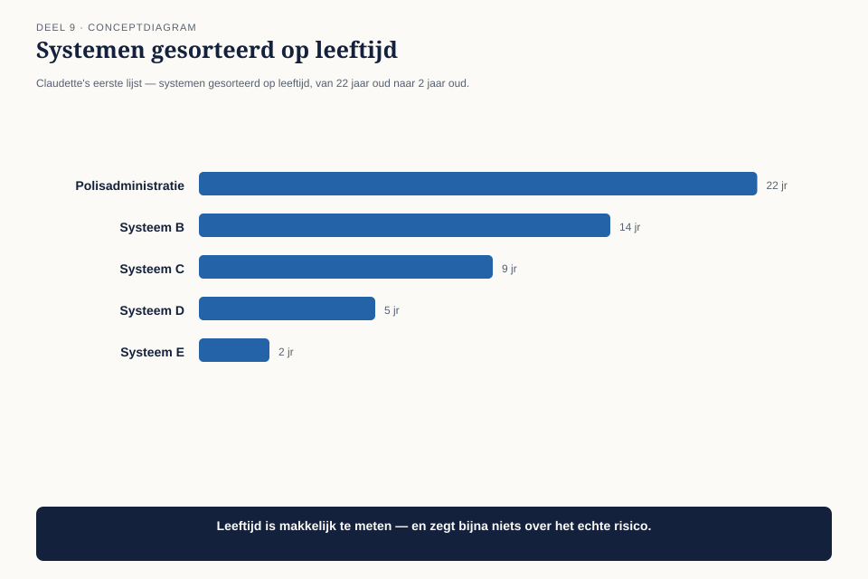
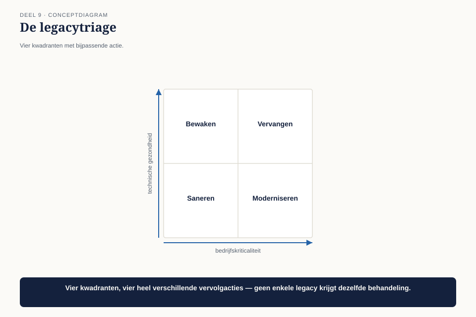

Deel 9 — IT Environment
Slidedeck · Ductus-cursus BTABoK · Niveau 1 · deel 9 van 30 · 26 slides
Slide 1 — Titel: IT Environment
Deel 9
Ductus
Slide 2 — Agenda: Vanmorgen
- De nieuwe kans
- Legacy is de normale toestand
- De legacytriage
- Governance: kaders versus ontwerp
- Kennismanagement: het levend archief
- De due diligence afgerond
Slide 3 — Sectie: 1. De nieuwe kans
Slide 4 — Bullets: Een nieuw fonds
- Consolidatietrend uit deel 2, nu concreet
- Vraag: kan Meridiaan dit erbij hebben?
- Claudette’s eerste stap: een lijst, gesorteerd op leeftijd
Slide 5 — Figuur: De lijst

Slide 6 — Citaat: Het oudste systeem op je lijst is onze polisadministratie. Niemand maakt zich da
Het oudste systeem op je lijst is onze polisadministratie. Niemand maakt zich daar zorgen over. Waarom staat die dan bovenaan?
— de directeur Uitvoering
Slide 7 — Sectie: 2. Legacy is de normale toestand
Slide 8 — Statement: Leeftijd is geen risicomaat
Slide 9 — Bullets: Twee echte assen
- Technische gezondheid — kan het nog veilig gewijzigd worden?
- Bedrijfskriticaliteit — wat gebeurt er als het uitvalt?
- Niet: hoe oud is het
Slide 10 — Sectie: 3. De legacytriage
Slide 11 — Figuur: Vier kwadranten

Slide 12 — Tabel: Actie per kwadrant
| Kriticaliteit laag | Kriticaliteit hoog | |
|---|---|---|
| Gezondheid goed | met rust laten | bewaken |
| Gezondheid slecht | uitfaseren wanneer mogelijk | prioritair |
Slide 13 — Bullets: De uitkomst bij Meridiaan
- Polisadministratie (22 jaar): gezondheid goed, kriticaliteit hoog → met rust laten
- Een koppelvlak van 5 jaar oud: extern gebouwd, documentatie in één hoofd, dat hoofd vertrokken
- Jong in leeftijd. Slecht in gezondheid. Dát is het risico.
Slide 14 — Opdracht: Opdracht 2 — Je eigen legacytriage
25 minuten, individueel
Minimaal 8 systemen · welk systeem stond hoger of lager dan verwacht?
Slide 15 — Sectie: 4. Kaders versus ontwerp
Slide 16 — Tabel: Het onderscheid
| Kaders | Ontwerp | |
|---|---|---|
| Voorbeeld | “elk koppelvlak: hetzelfde patroon” | “dit koppelvlak: zo gebouwd” |
| Wie | het gremium, vooraf | het projectteam, tijdens de bouw |
Slide 17 — Statement: Gremium ontwerpt mee → vertraging
Niemand stelt kaders → elk team vindt het wiel opnieuw uit
Slide 18 — Opdracht: Opdracht 3 — Kaders of ontwerp
20 minuten, tweetallen
Zes uitspraken · herschrijf waar nodig
Slide 19 — Sectie: 5. Kennismanagement
Slide 20 — Bullets: Het besluitenlogboek uit deel 7
- Ze zoekt het besluit over het koppelvlakpatroon op
- Vindt het — inclusief het vijfde veld
- “Zodra we een derde fonds aansluiten via hetzelfde patroon”
- Dat moment is nu
Slide 21 — Statement: Niet vastleggen voor de vorm
Vastleggen omdat het je op een dag redt
Slide 22 — Opdracht: Opdracht 4 — Je eigen logboek raadplegen
15 minuten, individueel
Is het vijfde veld specifiek genoeg om te herkennen wanneer het moment daar is?
Slide 23 — Sectie: 6. De due diligence afgerond
Slide 24 — Bullets: Het rapport
- Geen lijst op leeftijd
- Vier kwadranten, twee systemen prioritair — om redenen los van leeftijd
- Bestaand kaderbesluit teruggevonden, heroverwegingsmoment bereikt
- Gremium stelt het kader vast, projectteam ontwerpt de uitvoering
Slide 25 — Bullets: Wat dit deel heeft opgeleverd
- Legacy: een diagnose, geen gevoel
- Governance: een werkbaar onderscheid, niet de spanning uit deel 1 opgelost
- Het besluitenlogboek: bewezen op een echt besluit
Slide 26 — Titel: Volgende keer
Deel 10 — Examentraining CITA-F en capstone
Alle zeven observaties komen samen.